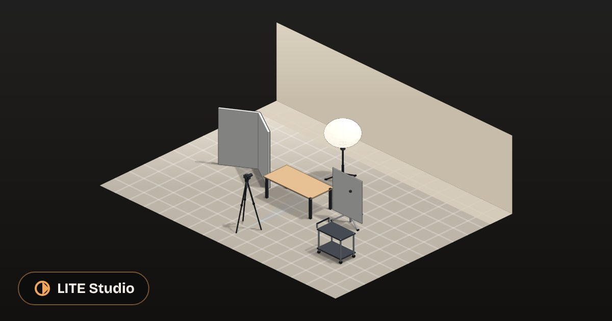
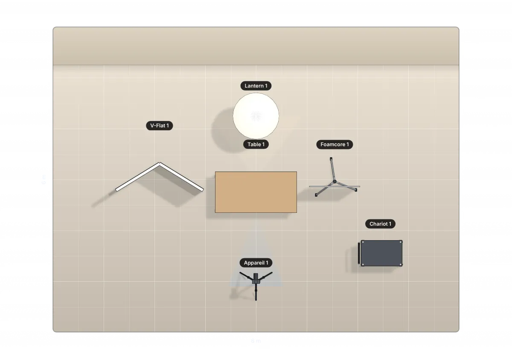

Food Editorial
Table 160 x 80, Camera High tripod, Lantern 90 cm, & Foamcore 100 x 150 +2
- 6 items
- Product
- 8 × 6 m studio


Gear 6
Capture
- 1 ×Camera High tripod70 x 86 cm
Lights
- 1 ×Lantern 90 cm
Control
- 1 ×V-flat 100 x 200
- 1 ×Foamcore 100 x 150
Furniture
- 1 ×Table 160 x 80
- 1 ×Cart Rolling cart80 x 50 cm
Open the preset to move the gear, measure distances and print the set sheet.
In the same category
 Packshot TabletopTable 120 x 70, Camera Standard tripod, Softbox Recta 60 x 90, & Diffusion frame 100 x 150 +2
Packshot TabletopTable 120 x 70, Camera Standard tripod, Softbox Recta 60 x 90, & Diffusion frame 100 x 150 +2 Bottle SpecularTable 120 x 70, Camera Standard tripod, Striplight 30 x 120, & Diffusion frame 200 x 200 +2
Bottle SpecularTable 120 x 70, Camera Standard tripod, Striplight 30 x 120, & Diffusion frame 200 x 200 +2 Jewelry ScrimTable 120 x 70, Camera High tripod, COB LED 300 W, & Scrim 100 x 100 +3
Jewelry ScrimTable 120 x 70, Camera High tripod, COB LED 300 W, & Scrim 100 x 100 +3